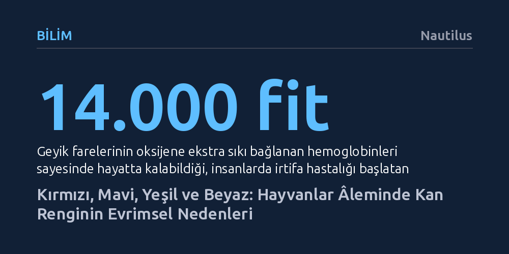

BILIM · Nautilus · 2026-10-27
Hayvanlar âleminde kan; içerdiği farklı metaller, pigmentler ve çevresel baskılar nedeniyle kırmızı, mavi, mor, yeşil veya tamamen şeffaf olabilir. Bu biyokimyasal çeşitlilik, aşırı soğuk ve yüksek irtifa gibi zorlu koşullara uyum sağlamak için geliştirilmiş evrimsel stratejileri yansıtır.
Kanın sadece kırmızı ve hemoglobin merkezli evrensel bir sıvı olmadığını, oksijen taşımanın ve hayatta kalmanın doğada çok çeşitli ve şaşırtıcı biyokimyasal yollarla çözüldüğünü gösterir.

İnsanlar ve omurgalıların büyük bölümü için kanın kırmızı olması doğanın değişmez bir kuralı gibi görünür. Bu canlılarda oksijen taşınması, alyuvarlarda bulunan ve merkezinde demir atomları barındıran hemoglobin proteini sayesinde gerçekleşir. Demir oksijenle bağlandığında parlak kiraz kırmızısı bir renge bürünürken, oksijenini bıraktığında koyulaşarak kahverengimsi kırmızıya döner. Oysa hayvanlar âleminin tamamı oksijen taşımak için demire veya hemoglobine bağımlı değildir.
Ahtapot, mürekkep balığı, karides ve yengeç gibi birçok deniz canlısı oksijen taşımak için demir yerine bakır atomları içeren hemosiyanin adlı proteini kullanır. Oksijenle bağlanan bakır, bu canlıların kanına belirgin bir mavi renk kazandırır. Hemosiyanin, oksijeni hemoglobin kadar verimli bağlayamaz; ancak derin denizlerin dondurucu sularında ve düşük sıcaklıklarda çok daha etkili çalışır. Dahası bu molekül yalnızca solunumda görev almakla kalmaz; canlıların bağışıklık sistemini destekleyerek yaraların iyileşmesine de katkı sağlar.
Renk çeşitliliği maviyle de sınırlı değildir. Brakiyopodlar (dallı bacaklılar) ve dipte yaşayan fıstık kurtları gibi bazı deniz omurgasızlarının kanı mor renkte akar. Bu canlılar hemosiyanin yerine hemeritrin adı verilen farklı bir pigment kullanır. Hemeritrin de tıpkı hemoglobin gibi demir temellidir; ancak moleküler yapısı ışığı farklı kırarak kana kırmızılık yerine menekşe moru bir ton kazandırır.
Bazı hayvanlarda kanın rengi, oksijen taşıyıcı ana proteinin yapısından ziyade dolaşım sisteminde biriken metabolik yan ürünler tarafından belirlenir. Örneğin okyanuslarda yaşayan patates benzeri yumuşak gövdeli tulumlular (deniz fıskiyeleri), yeşilimsi sarı renkte kana sahiptir. Bu canlılar hemoglobin üretmez. Bilim insanları sarımsı tonun kökenini iki ana hipotezle açıklar: Kimi araştırmacılar bu rengi tulumluların kanlarında yüksek miktarda biriktirdiği vanadyum elementine bağlarken, diğerleri beslenme biçimine işaret eder. Fitoplanktonları sindiren tulumlular, sarı ve turuncu renkli karotenoid pigmentleri metabolize ederek bu rengi oluşturuyor olabilir.
Yeni Gine’de yaşayan bazı kertenkele türlerinde ise durum daha da sıra dışıdır; bu sürüngenlerin damarlarında tamamen parlak yeşil bir kan dolaşır. Kertenkeleler aslında tipik omurgalılar gibi oksijeni hemoglobin ile taşır. Ancak vücutları daha sonra bu hemoglobini parçalayarak doğal olarak yeşil renkli biliverdin pigmentine dönüştürür. İnsanlarda yüksek yoğunluğa ulaştığında sarılık hastalığına neden olan biliverdin, çoğu omurgalı tarafından hızla diğer bileşiklere dönüştürülüp vücuttan atılır.
Oysa Yeni Gine kertenkeleleri biliverdini kan dolaşımlarında ve dokularında muazzam miktarlarda biriktirir. Yeşil pigmentin yoğunluğu o kadar baskındır ki hemoglobinin kırmızı rengini tamamen örterek kanın ve vücut dokularının zümrüt yeşili görünmesine yol açar.
Kanın sıra dışı hallerinin en uç örneğine Antarktika’nın dondurucu sularında rastlanır. Channichthyidae familyasına ait Antarktika siyah yüzgeçli buz balıkları, dünyada alyuvar üretmeyen ve hemoglobin taşımayan bilinen tek omurgalı grubudur. Bu canlıların damarlarında kırmızı ya da renkli hiçbir sıvı akmaz; kanları süt beyazı, yarı saydam ve adeta şeffaftır. Oregon Üniversitesi'nden gelişimsel genetikçi John Postlethwait, bu canlıları tanımlarken "Gerçekten de bir tür hayalet gibiler" ifadesini kullanır.
Buz balıkları hemoglobin veya benzeri herhangi bir oksijen bağlayıcı protein kullanmaz; bunun yerine doğrudan kan plazmasında çözünen serbest oksijene güvenir. Bu eksikliği telafi edebilmek için diğer Antarktika balıklarına kıyasla çok daha büyük kalplere ve geniş kılcal damarlara evrilmişlerdir; böylece vücutlarında çok daha yüksek hacimlerde kan pompalayabilirler. Ayrıca enerji harcamalarını en aza indiren pusu avcılarıdır; sürekli yüzmek yerine hareketsiz bekleyerek metabolik oksijen ihtiyaçlarını düşük tutarlar.
Postlethwait ve ekibinin yürüttüğü genom araştırmaları, buz balıklarının DNA'sından hemoglobin üreten genlerin silindiğini ortaya koymuştur. Evrimsel süreçte önce alyuvarların mı yoksa hemoglobinin mi kaybedildiği henüz tam olarak aydınlatılamamıştır. Ancak araştırmacılar, Antarktika'nın aşırı soğuk sularının oksijen bakımından son derece zengin olmasının, hemoglobin gibi bir aracı taşıyıcıya duyulan ihtiyacı ortadan kaldırmış olabileceğini öne sürmektedir.
Kanın evrimi sadece farklı renklere bürünmekle sınırlı kalmamış, oksijenin kıt olduğu uç ortamlarda hayatta kalabilmek için mevcut moleküler mekanizmaları da sınırlarına kadar zorlamıştır. Deniz seviyesinden 14.000 fit yüksekliğe kadar yaşayabilen geyik fareleri, insanların şiddetli irtifa hastalığına yakalandığı sınırların çok üzerinde varlıklarını sürdürür. Bu kemirgenler, havadaki az miktardaki oksijeni bile yakalayabilmek adına oksijene olağanüstü sıkı bağlanan özel bir hemoglobin yapısı geliştirmiştir. Benzer genetik değişikliklere And Dağları'ndaki sinek kuşlarında ve yüksek irtifada yaşayan kara benekli kurbağalarda da rastlanır.
Ne var ki evrimsel adaptasyonlar hiçbir zaman bedelsiz gerçekleşmez. Montana Üniversitesi'nden ekofizyolog Zachary Cheviron, bu adaptasyonların kaçınılmaz bir ödünleşim (trade-off) barındırdığına dikkat çeker. Oksijene fazlasıyla sıkı bağlanan hemoglobin, ciğerlerde oksijeni kolayca toplar ancak dokulara ulaştığında onu serbest bırakmakta zorlanır. Geyik fareleri bu teslimat güçlüğünü aşmak için kas liflerinde daha yüksek miktarda mitokondri bulundurarak oksijen kullanım verimini dengeler.